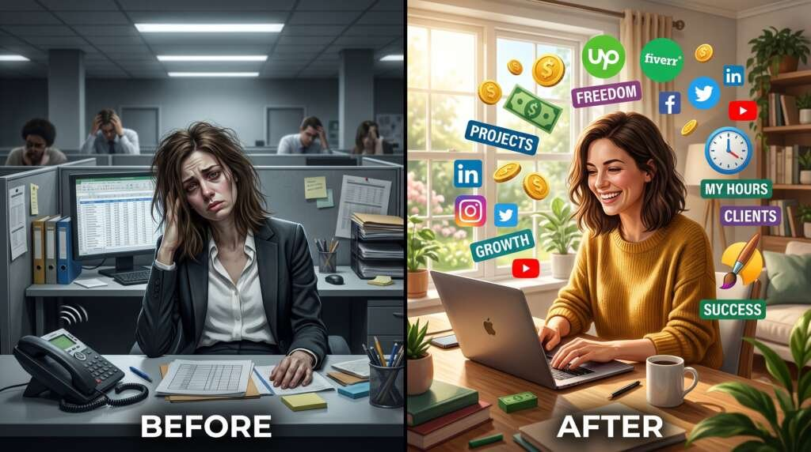
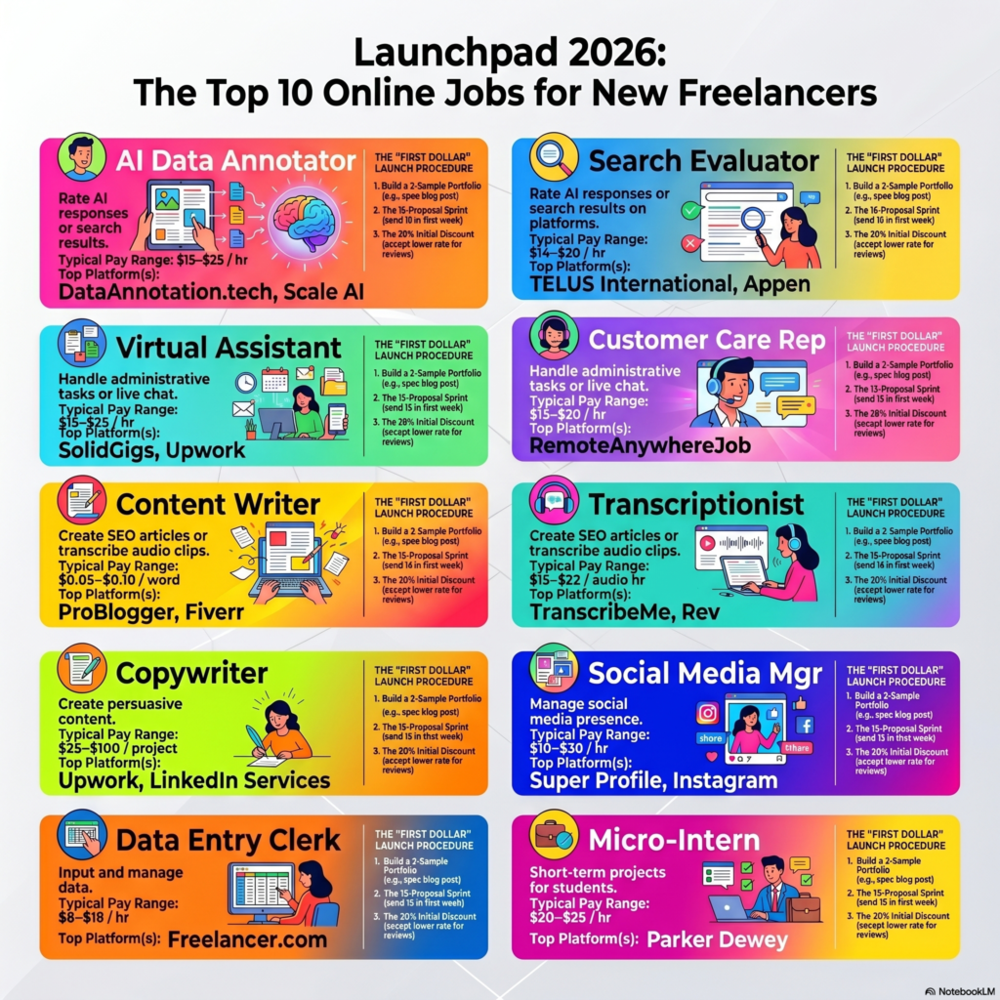

The remote work landscape has transformed significantly, creating accessible opportunities for anyone with a computer and an internet connection. If you are a beginner looking to land your first paid project within 30 days, targeting the right platforms and roles is essential for building the proof needed for a long-term career.
Below are the top 10 online jobs for new freelancers, along with step-by-step procedures to get started.

AI Data Labeler & Annotation Specialist
This is a booming field where you help train AI models like ChatGPT by rating their responses or labeling data.
What you do:
You might compare two AI answers and pick the better one, label images, or write prompts to challenge an AI’s reasoning.
Platforms: Outlier AI, DataAnnotation.tech, Scale AI
Procedure:
Sign up on these platforms and complete their initial screening tests. Focus on judgment over checkbox compliance and explain your reasoning clearly. Once approved, you can start working on projects immediately, often with a fast payout cycle.
Search Engine Evaluator
Companies need humans to ensure search results are relevant and accurate.
What you do:
You rate how well a search result matches what a user was looking for.
Platforms: TELUS International AI, Appen
Procedure:
Register in their AI Community programs. Carefully read the qualification guidelines before taking the exam. After passing, you can start receiving flexible, contract-based work.
Virtual Assistant (VA)
A virtual assistant provides remote administrative support to business owners or busy professionals.
What you do:
Manage emails, schedule meetings, handle travel planning, or perform basic data entry.
Platforms: SolidGigs, FlexJobs, Upwork
Procedure:
List your existing skills such as typing, Google Workspace, or social media knowledge. Build a professional profile and apply for entry-level roles. Stay responsive and reliable, as these are the top qualities clients look for.
Remote Customer Service Representative
Support roles are often the entry point to the digital economy because they prioritize soft skills over degrees.
What you do:
Answer customer questions via live chat, email, or phone.
Platforms: RemoteAnywhereJob, Upwork, Fiverr
Procedure:
Identify transferable skills like empathy and problem-solving. Practice clear and concise communication. Prepare for interviews with a professional setup and a stable internet connection.
Freelance Copywriter
Copywriting involves writing content that persuades people to take action.
What you do:
Write website content, email campaigns, or social media posts.
Procedure:
Study successful ads and experienced copywriters. Create before-and-after writing samples by improving existing content. Reach out to potential clients with personalized suggestions or audits.
Content Writer (Blogs & SEO)
Businesses rely on blog content to stay visible on search engines ( seo strategies ).
What you do:
Research topics and write informative, engaging articles.
Platforms: ProBlogger Job Board, We Work Remotely
Procedure:
Choose a niche to specialize in. Create sample articles on platforms like Medium or LinkedIn. Send personalized proposals that show you understand the client’s requirements.
Transcriptionist
This role is ideal for people with strong listening and typing skills.
What you do:
Convert audio or video recordings into written text.
Platforms: TranscribeMe, Rev, GoTranscript
Procedure:
Create an account and set up your payment method. Pass an entrance test to demonstrate accuracy. Start with shorter files and gradually move to higher-paying projects.
Data Entry & Document Processing
This is one of the easiest ways for beginners to start freelancing.
What you do:
Enter data into spreadsheets, convert documents, and organize files.
Platforms: Freelancer.com, Guru.com, Upwork
Procedure:
Learn the basics of Excel or Google Sheets. Highlight your attention to detail in your profile. Apply for project-based or hourly work consistently.
Social Media Manager
Many businesses need help maintaining their social media presence.
What you do:
Create content, respond to comments, and manage engagement.
Platforms: LinkedIn Services Marketplace, Direct Outreach
Procedure:
Identify businesses with weak or inactive social media accounts. Use tools like Canva to design posts. Showcase your own profiles as proof of your skills.
Basic Graphic Designer
You do not need advanced skills to start earning in graphic design.
What you do:
Design social media posts, logos, and presentations.
Platforms: Fiverr, 99designs, Behance
Procedure:
Learn beginner-friendly tools like Canva or Figma. Build a sample portfolio with practice designs. Offer a few specific services at competitive beginner rates.
Final Pro Tip for Success
To land your first client quickly, focus on one service instead of trying to do everything. Send multiple personalized proposals and consider starting with slightly lower rates to secure your first positive review.
Frequently Asked Questions (FAQs)-Top 10 Online Jobs
What is RLHF and why is it important?
RLHF, or Reinforcement Learning from Human Feedback, is a process where humans improve AI responses by rating and refining them. It plays a key role in making AI systems more accurate and useful.
How can I identify real jobs and avoid scams?
Legitimate jobs do not require upfront payments. Use trusted platforms and avoid offers that seem unrealistic or too good to be true.
How much can beginners earn?
Earnings start small but grow steadily as you gain experience, improve your skills, and build a strong portfolio.
How can I build a portfolio without experience?
Create sample work for fictional brands or improve existing content to demonstrate your ability.
How many proposals should I send?
Consistency is key. Sending multiple well-written, personalized proposals increases your chances of getting hired.
Why do people fail AI job qualification exams?
Most failures happen due to lack of preparation. Reading and understanding the guidelines is essential.
Can I freelance while working a full-time job?
Yes, many freelancers start part-time and gradually transition to full-time as they grow.
What are digital products?
Digital products are items like templates or guides that can be sold repeatedly, creating passive income.
Which platforms are best for beginners?
General freelancing platforms and transcription websites are good starting points for beginners.
Will AI replace freelancers?
AI is more of a supportive tool that enhances productivity rather than replacing human creativity.
What is the most important skill for customer support roles?
Empathy and problem-solving are the most valuable skills in customer support.
How do freelancers receive payments?
Most platforms use digital payment systems such as PayPal and other global payment solutions.
